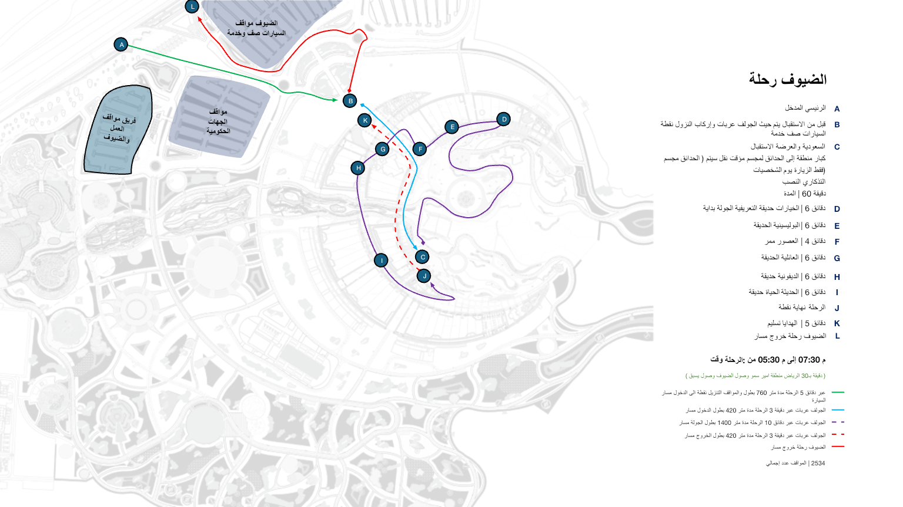
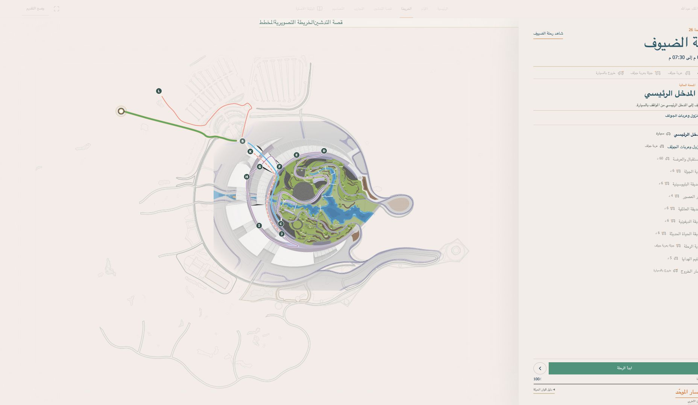
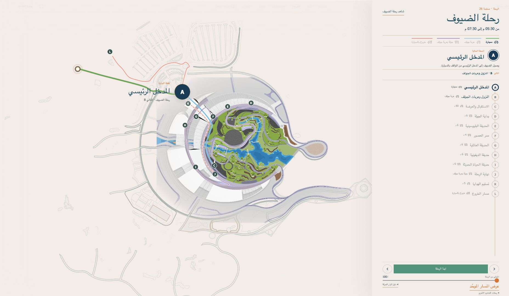

رحلة الضيوف · ملف V.15
الذكاء الاصطناعي لا يزيّن الواجهة؛ يعيد ترتيب الانتباه
المصدر ← المشكلة ← الحل

01 · المصدر
تسلسل صريح ومسار ملوّن

02 · نسخة 5/10
خريطة داخل تخطيط ومعلومات بعيدة

03 · الاتجاه المصحح
المكان هو الواجهة والمحطة داخل العالم